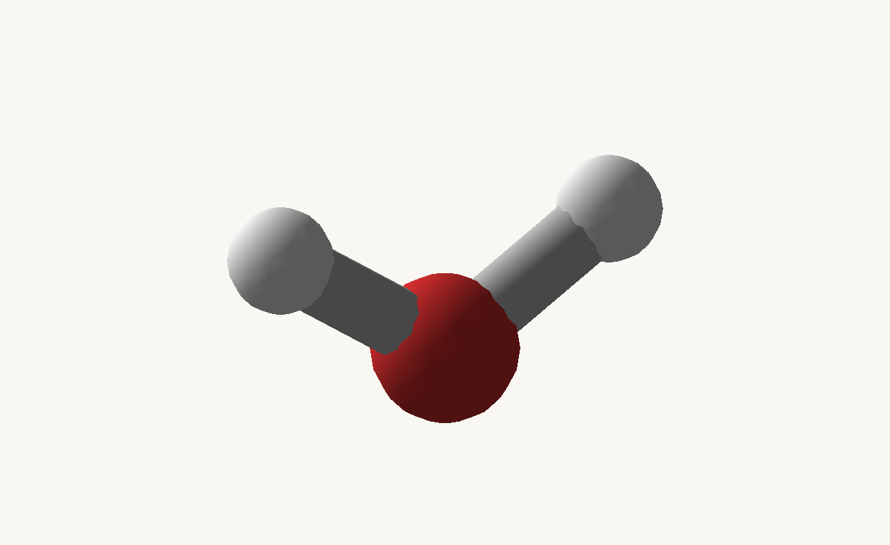
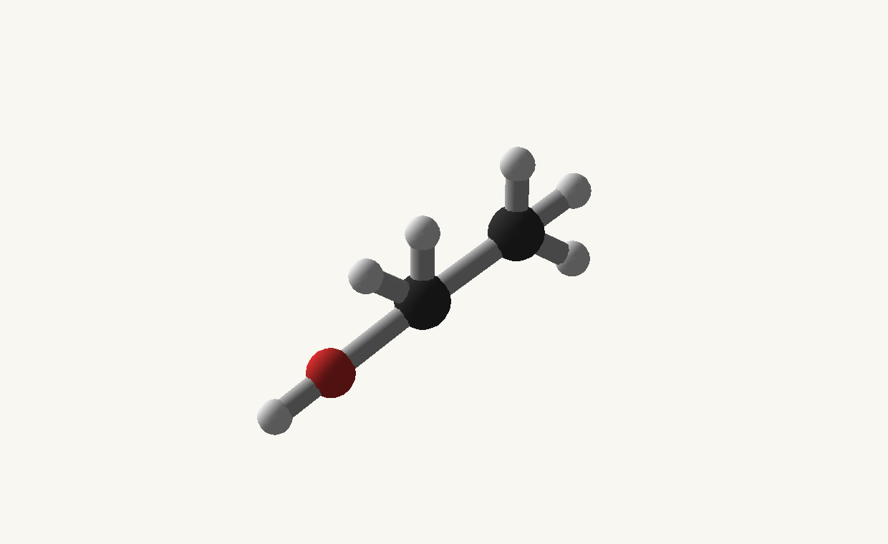
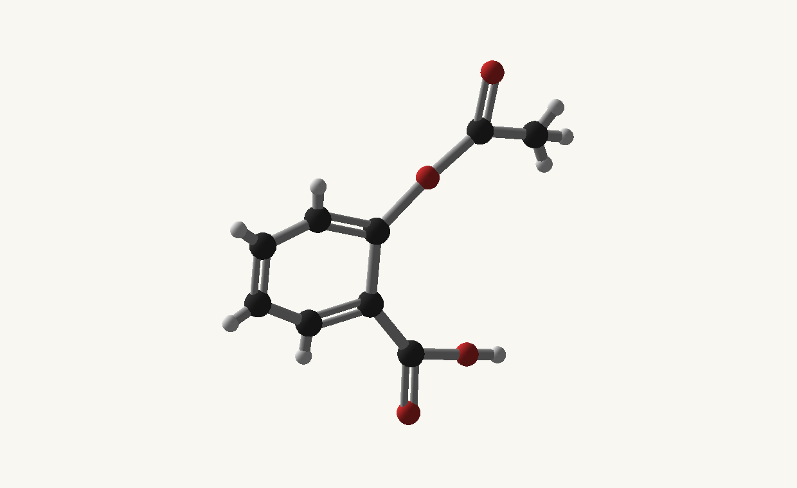
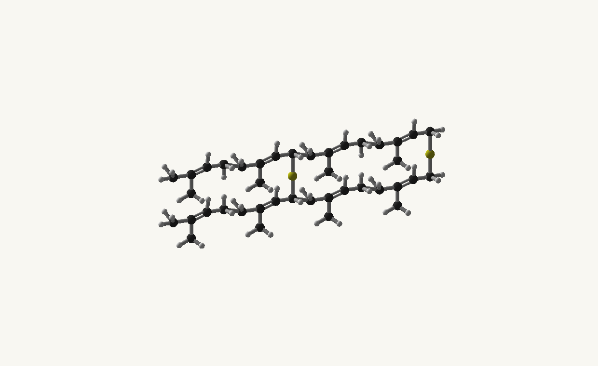

Avogadro guide · Minecraft 1.12.2 / Cleanroom
Choose an example
Real chemicals, working recipes, and the resulting renders. Start with a small model, then explore the features you need.
Imports and complete companion files
Examples are methods inside the downloadable companion classes. Copy the methods you need into your own class and keep the imports at the top. GuideModels contains the reusable chemical recipes; GuideTasks contains the operations. These files are documentation examples, not built-in library content.
Java model recipes · Java operations · Complete Groovy model script · Groovy client helpers
The complete Groovy model script can be saved as groovy/postInit/avogadro_examples.groovy. It includes the reusable GuideModels class and registers all ten chemical examples through the reloadable script registry. The separate client helper download is a reference for client integrations: keep it out of common postInit scripts and dedicated-server entry points. Java users should likewise copy common operations into their common class and keep screen/export operations in a client class.
import io.github.wurtzitane.avogadro.api.*;
import io.github.wurtzitane.avogadro.molecule.*;
// Client code only:
import io.github.wurtzitane.avogadro.api.client.*;
import io.github.wurtzitane.avogadro.client.export.*;
import java.util.List;
import java.util.Map;The chemical examples


H2OExplicit coordinates, attachments, atom inspection Full size

CH4OReusable fragments and named connections Full size


C2H6OSMILES, galleries, independent views Full size


C9H8O4Branches, rings, GIF export Full size

C8H10N4O2Fused-ring connectivity and MP4 export Full size

C12H24O6Authored transforms, repeats, ring closure Full size

H3NReplace an atom, add H, edit positions Full size

HO(C2H4O)nHLinear repeat units and explicit end groups Full size


Depends on length and selected linksAdjustable networks, probabilities, exact seeded exports Full size

NaCl formula unitUnit cells, ion configurations, finite lattice previews Full size
Find a feature
| Task | Example / guide | What to try |
|---|---|---|
| Register, update, remove, or batch content | Registration lifecycle | Owner isolation; asynchronous completion; server/client views |
| Metadata, NBT, fluids, containers, tags, materials | Matching | Pure-water selector; potion metadata; fallback table |
| Attachments, transforms, editing, deletion, remapping | Structures | Methanol pieces; ammonia edit; peroxide copy |
| Finite assembly, repeats, ring closure | 18-crown-6 | Close a ring explicitly after repeating six pieces |
| Chains, nested groups, caps, branches, seeded patterns | Polymers and networks | PEG; sulfide alternatives; candidate links and capacities |
| Crystals and periodic structures | Rock salt | A finite 3 × 3 × 3 expansion; unit-cell recipes |
| Ions, isotopes, components, mass | Atomic details | Carbon-13 methanol; sodium ions; mixed inspection links |
| Camera, palettes, styles, time, tooltip context | Rendering | Two simultaneous viewports; static and rotating views |
| GIF, MP4, galleries, item cards, atomic and network views | Media exports | Decoded output examples with the submission code |
| Progress, callbacks, cancellation, errors, threading | Export jobs | Retain the handle; distinguish success/cancel/failure |
| Complete field/options/limit tables | Definition reference | Copy/edit JSON; source precedence; strict syntax |
| Build and integration dependencies | Build and integrate | Native Javadoc, Gradle wrapper, mapped artifacts |
Register the example collection
The collection contains the ten real chemical models shown using the selector below. It is optional documentation content, never an automatically installed catalog. The helper methods used below are in GuideModels.java.
Java · method inside your host class; imports and full files below.
public static MoleculeBatch catalog() {
var batch = new MoleculeBatch();
batch.register(AvogadroApi.builder("guide:water").name("Water").structure(water())
.items("minecraft:water_bucket").fluids("water").generateItem(true));
batch.register(AvogadroApi.builder("guide:methanol").name("Methanol").structure(methanol()));
batch.register(AvogadroApi.builder("guide:ethanol").name("Ethanol").smiles("CCO"));
batch.register(AvogadroApi.builder("guide:aspirin").name("Aspirin")
.smiles("CC(=O)OC1=CC=CC=C1C(=O)O"));
batch.register(AvogadroApi.builder("guide:caffeine").name("Caffeine")
.smiles("CN1C=NC2=C1C(=O)N(C(=O)N2C)C"));
batch.register(AvogadroApi.builder("guide:crown").name("18-crown-6")
.smiles("C1COCCOCCOCCOCCOCCO1"));
batch.register(AvogadroApi.builder("guide:ammonia").name("Ammonia").structure(ammonia().fragment()));
batch.register(AvogadroApi.builder("guide:peg").name("Polyethylene glycol").polymer(peg()));
batch.register(AvogadroApi.builder("guide:rubber").name("Sulfur-linked polyisoprene")
.polymerNetwork(rubber()));
batch.register(AvogadroApi.builder("guide:salt").name("Sodium chloride").structure(saltBasis())
.crystalCell(new CrystalCell(5.64, 5.64, 5.64, 90, 90, 90)).formula("NaCl"));
return batch;
}Groovy · same API; place methods in your script or client helper as described.
static MoleculeBatch catalog() {
def batch = new MoleculeBatch();
batch.register(AvogadroApi.builder("guide:water").name("Water").structure(water())
.items("minecraft:water_bucket").fluids("water").generateItem(true));
batch.register(AvogadroApi.builder("guide:methanol").name("Methanol").structure(methanol()));
batch.register(AvogadroApi.builder("guide:ethanol").name("Ethanol").smiles("CCO"));
batch.register(AvogadroApi.builder("guide:aspirin").name("Aspirin")
.smiles("CC(=O)OC1=CC=CC=C1C(=O)O"));
batch.register(AvogadroApi.builder("guide:caffeine").name("Caffeine")
.smiles("CN1C=NC2=C1C(=O)N(C(=O)N2C)C"));
batch.register(AvogadroApi.builder("guide:crown").name("18-crown-6")
.smiles("C1COCCOCCOCCOCCOCCO1"));
batch.register(AvogadroApi.builder("guide:ammonia").name("Ammonia").structure(ammonia().fragment()));
batch.register(AvogadroApi.builder("guide:peg").name("Polyethylene glycol").polymer(peg()));
batch.register(AvogadroApi.builder("guide:rubber").name("Sulfur-linked polyisoprene")
.polymerNetwork(rubber()));
batch.register(AvogadroApi.builder("guide:salt").name("Sodium chloride").structure(saltBasis())
.crystalCell(new CrystalCell(5.64, 5.64, 5.64, 90, 90, 90)).formula("NaCl"));
return batch;
}Java · method inside your host class; imports and full files below.
public static CompletableFuture<MoleculeView> registerCatalog() {
// Replaces this owner's contribution only. Other owners are untouched.
return AvogadroApi.owner("guide").replace(GuideModels.catalog());
}Groovy · same API; place methods in your script or client helper as described.
// In postInit: register each downloaded definition with the script registry.
mods.avogadro.molecules.register(
io.github.wurtzitane.avogadro.api.MoleculeSpec.fromJson('guide:water', new File('scripts/examples/water.json').text))Chemical sources
- Water: formula / connectivity or structure reference.
- Methanol: formula / connectivity or structure reference.
- Ethanol: formula / connectivity or structure reference.
- Aspirin: formula / connectivity or structure reference.
- Caffeine: formula / connectivity or structure reference.
- 18-crown-6: formula / connectivity or structure reference.
- Ammonia: formula / connectivity or structure reference.
- Polyethylene glycol: formula / connectivity or structure reference.
- Sulfur-linked polyisoprene: formula / connectivity or structure reference.
- Sodium chloride: formula / connectivity or structure reference.
Only the two fictional appendix examples use invented nuclei. Avogadro does not predict their stability or properties.